Layout and excerpts
Tune a code block for the space around it, then select parts of a larger file without losing their source coordinates.
Fit long lines
Reduce the width to compare ordinary wrapping with smart indentation; the wrap marker appears on continuation lines when smart indentation is enabled.
Row inset adds space around each line; block padding adds space around the whole block. Moving numbers outside places them beside the code border.
#import "@preview/codly:2.0.0" as codly
#show: codly.theme(layout-theme, block: (text: (size: layout-size)))
#show: codly.line-set_(inset: layout-inset)
#show: codly.number-set_(
placement: if layout-outside { "outside" } else { "inside" },
)
#codly.new(
```py
def send_digest(address, updates):
if updates:
subject = "Your weekly project updates are ready to read"
send_email(address, subject=subject, body=format_updates(updates))
return {"recipient": address, "delivered": bool(updates)}
```,
file: "digest.py",
width: layout-width,
radius: layout-radius,
padding: layout-padding,
number-enabled: layout-numbers,
smart-indent: layout-smart-indent,
wrap-marker: if layout-wrap-marker { [↪] } else { none },
)Edit & run on your device
The controls supply the example variables. Their definitions are hidden here; Copy code includes the current values and your edits.

See codly.new for block fields and codly.theme for styling individual components.
Show an excerpt with a review gutter
The review marks belong to source lines 2, 4, and 7; they stay attached when the excerpt or numbering offset changes.
#import "@preview/codly:2.0.0" as codly
#show: codly.theme("github-light", block: (text: (size: 9pt)))
#show: codly.line-set_(fill: excerpt-fills)
#codly.new(
```py
def visible_names(records):
names = []
for record in records:
if record["active"]:
name = record["name"].strip()
names.append(name)
return sorted(names)
print(visible_names(records))
```,
file: "names.py",
ranges: excerpt-ranges,
offset: excerpt-offset,
number-enabled: excerpt-numbers,
smart-skip: excerpt-smart-skip,
indent-guides: if excerpt-guides {
(width: excerpt-guide-width)
} else { false },
gutters: if excerpt-review {
(auto, codly.gutter-column(
values: (none, "?", none, "!", none, none, "✓", none),
width: excerpt-gutter-width,
align: center,
text: (fill: rgb("8250df")),
))
} else { auto },
)Edit & run on your device
The controls supply the example variables. Their definitions are hidden here; Copy code includes the current values and your edits.

See codly.range, codly.smart-skip, and codly.gutter-column for the selection and gutter rules. Continue with annotations and references to attach explanations to those lines.